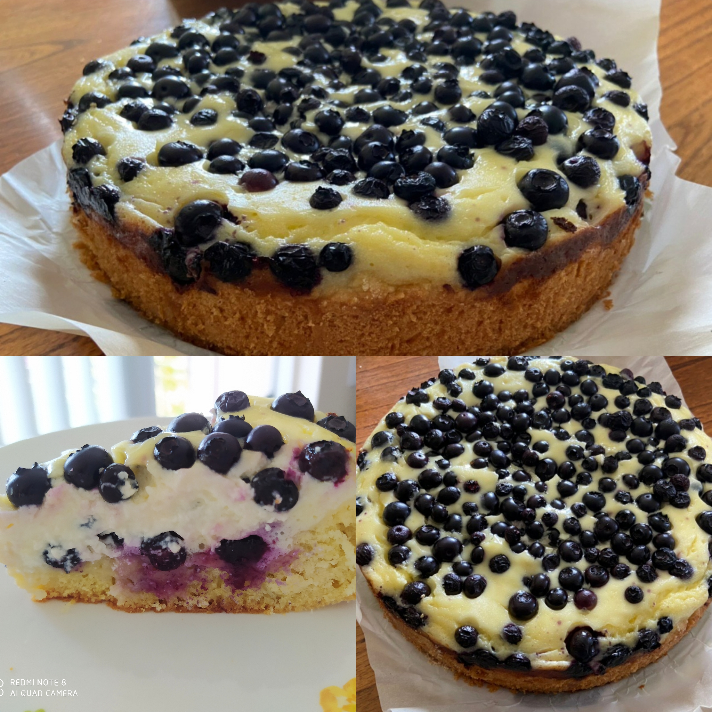

Blueberry Pie

Ingredients:
Sand dough:
- 250 gr flour
- 1 tsp baking powder
- 100 gr butter
- 2 eggs 1s
- 60 gr sugar
Sour cream filling:
- 350 gr sour cream
- 2 eggs
- 90 gr sugar
- 20 gr starch
- vanilla/cinnamon
- 250-300gr berries
Direction:
- Mix soft butter with sugar in a homogeneous mass. Add sour cream, beat until fluffy. Add flour, baking powder and vanilla sugar. Knead very quickly so that the contact of hot hands with the dough is minimal. The finished dough is very soft and elastic, incredibly pleasant to the touch. Spread it over the surface of the baking dish, send it to the freezer for 10 minutes.
- At this time, mix all the ingredients for sour cream filling. You can use flour or cornstarch to thicken, spoons should be slightly heaped. Then there are two ways to form a pie. The first is to pour out the berries and pour over the filling. And the second is to pour the filling, and then add the berries. I like the second way better. Only the berries will need to be lightly rolled in starch, otherwise they will immediately drown in the filling and will not be visible on the surface of the cake. Send the workpiece to an oven preheated to 375F for 50-60 minutes in the upper and lower heating mode. After a while, the middle of the pie with blueberries and sour cream filling will tremble, don't let that scare you. Remove from oven and let cake cool completely, then refrigerate until completely set. Cracks often appear on the fill. I usually leave it overnight. Carefully try to get the frozen cake out of the mold and serve.